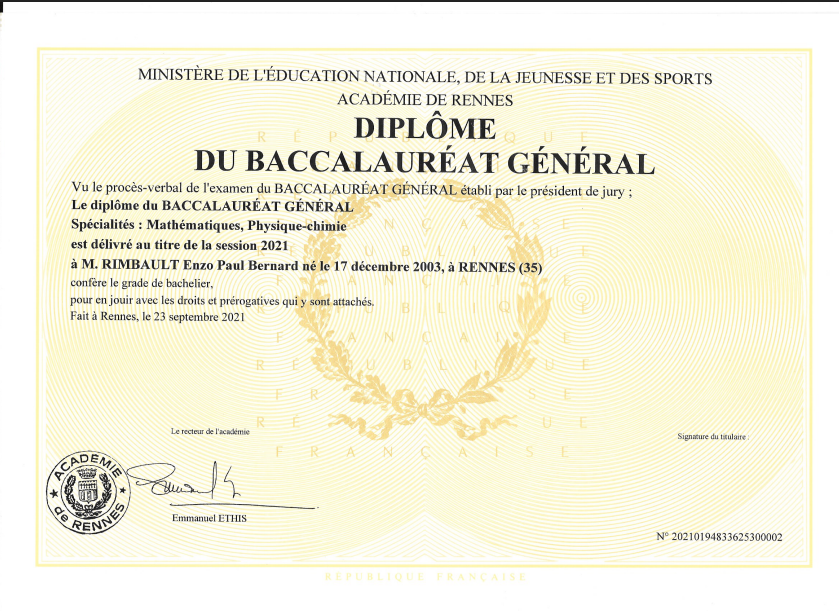
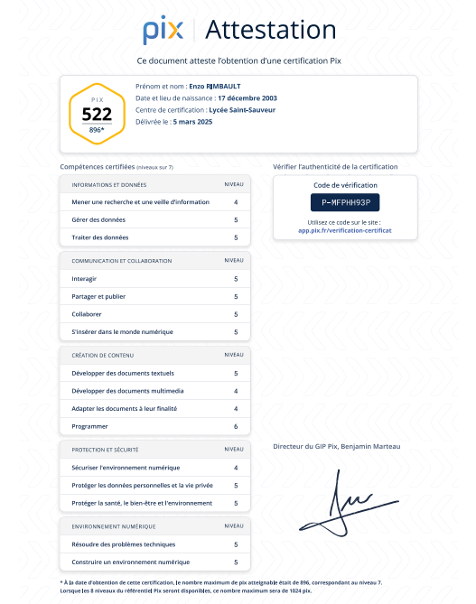
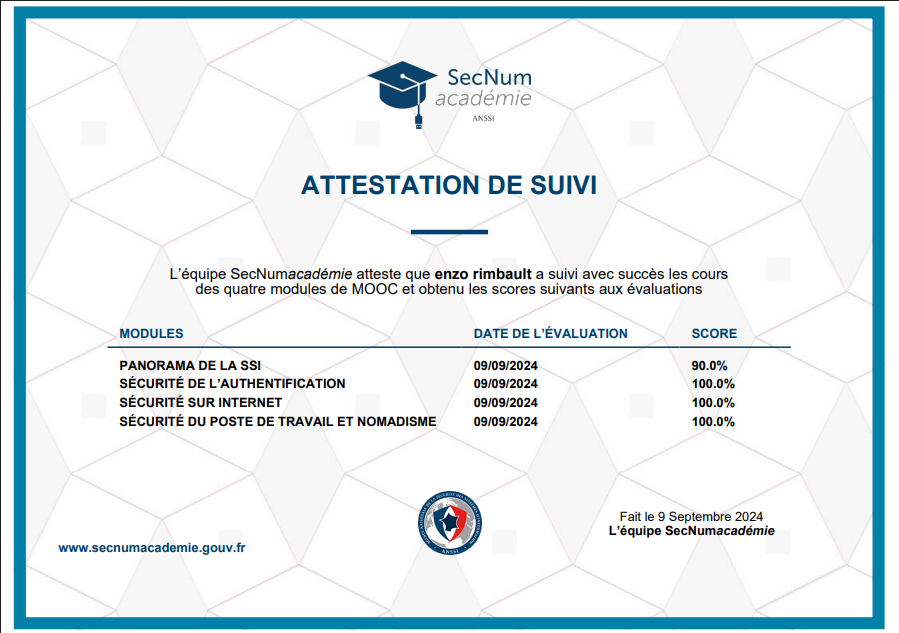

Au cours de mon parcours scolaire et professionnel, j’ai obtenu plusieurs diplômes et certifications attestant de mes compétences académiques, techniques et numériques.
Cette section présente mes principales reconnaissances officielles, sous forme de diaporama interactif. Cliquez sur les flèches pour les découvrir une à une.
Baccalauréat Général (Options Mathématiques, Physique, SVT)

Le Baccalauréat général que j'ai obtenu avec les options Mathématiques, Physique et SVT m'a permis de développer une forte capacité d'analyse et de réflexion scientifique.
Ouvrir le document
Certification PIX

La certification PIX valide mes compétences numériques, couvrant l'utilisation des outils bureautiques, la gestion de l'information, la sécurité informatique et la culture numérique.
Ouvrir le document
MOOC ANSI

Le MOOC ANSI m'a permis de renforcer mes compétences en sécurité informatique, en comprenant les normes et les pratiques essentielles à la cybersécurité.
Ouvrir le document